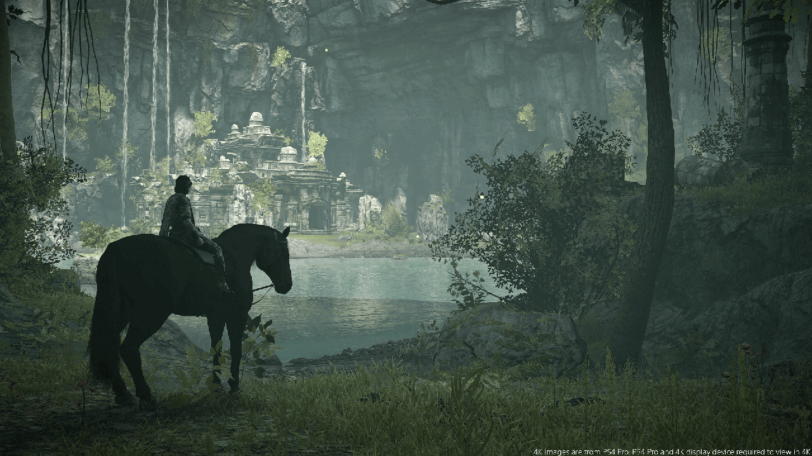

Colossos
English
The main goal of Shadow of the Colossus is to seek out and kill the sixteen colossi (巨像 Kyozō) in the Forbidden Lands. The colossi are imposing creatures made of stone and dark fur (and sometimes moss) resembling grass. Surprisingly, not all of them are huge in size, but all of them require some thinking to find (and especially to exploit) their magic sigils.
Português
O objetivo principal de Shadow of the Colossus é procurar e matar os dezesseis colossos (巨像 Kyozō) nas Terras Proibidas. Os colossos são criaturas imponentes feitas de pedra e pele escura (e às vezes musgo) parecidas com grama. Surpreendentemente, nem todos eles são enormes em tamanho, mas todos eles requerem algum pensamento para encontrar (e especialmente explorar) seus sigilos mágicos.
